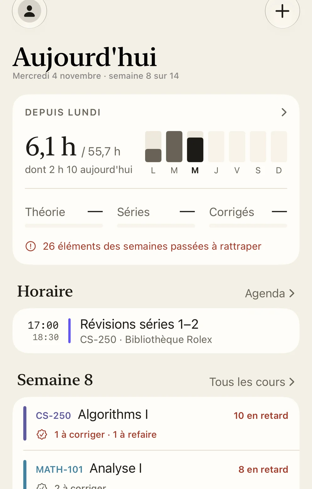
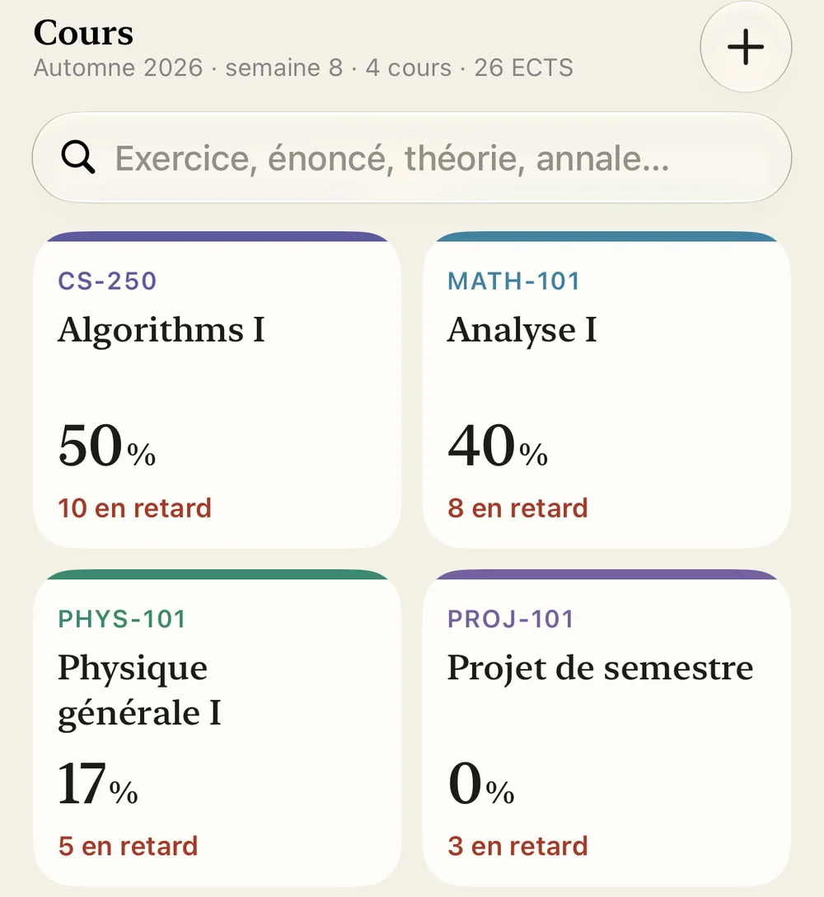
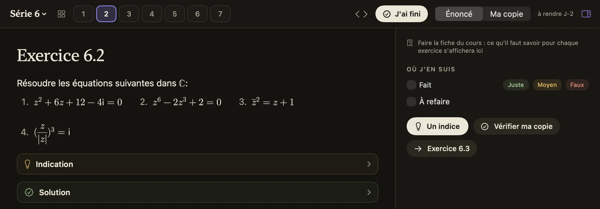
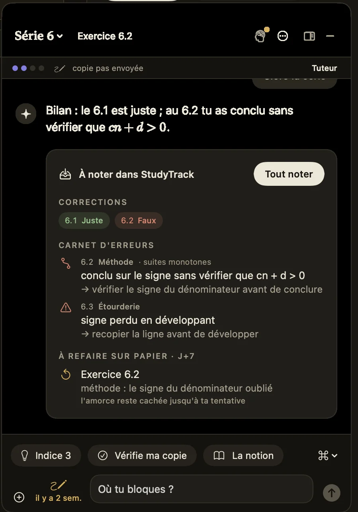
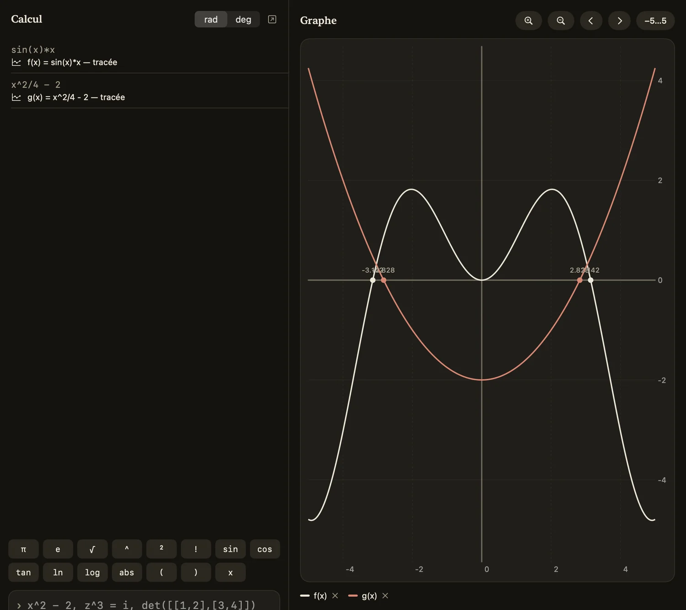
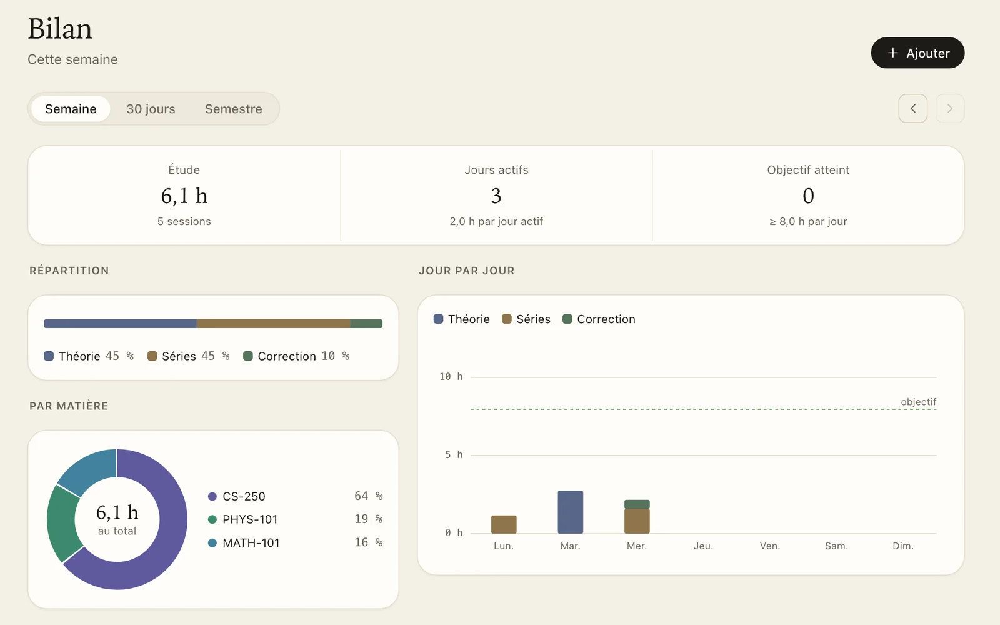
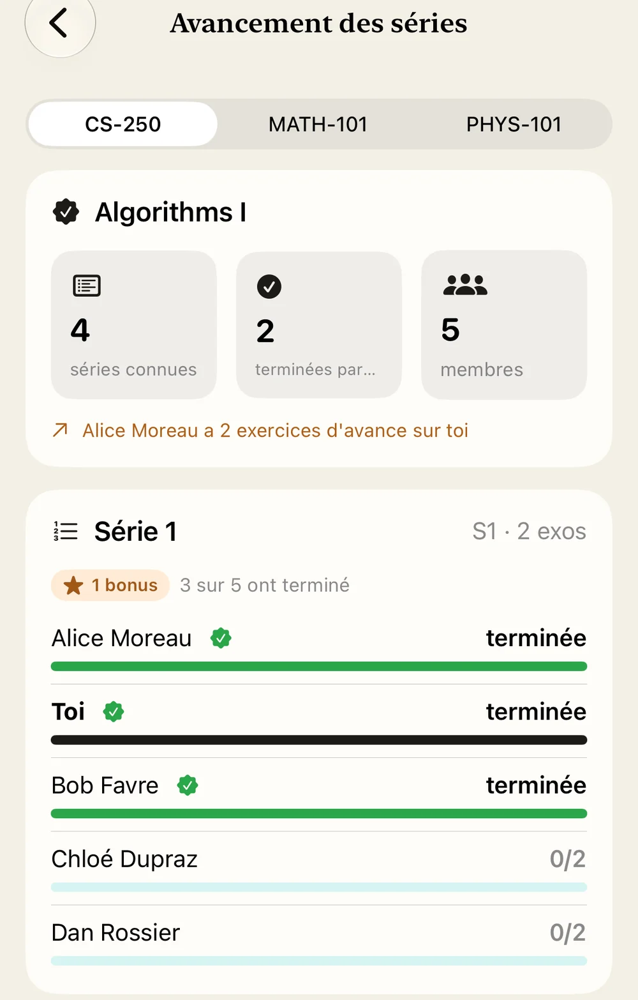

iPhone
Bêta publique sur TestFlight
Rejoindre la bêtaInstalle d'abord TestFlight depuis l'App Store, puis ouvre le lien de la bêta sur ton iPhone. Les mises à jour arrivent ensuite toutes seules.
Images © swisstopo · Sentinel-2 cloudless 2020, EOX · bâtiments © OpenStreetMap
Vidéos, séries, corrigés, horaire : StudyTrack va les chercher pour toi et te dit chaque jour ce qu'il reste à faire.
Gratuit et sans pub · made with ❤️ by hczr
En ouvrant l'app, tu vois combien tu as travaillé depuis lundi, ton prochain cours, et pour chaque matière ce qui t'attend cette semaine.
Ce que tu as laissé passer les semaines d'avant ne disparaît pas. Il reste dans un coin, le temps que tu le rattrapes.

Tu te connectes une seule fois, avec ton compte EPFL et sur la page de l'école. StudyTrack passe ensuite dans chacun de tes cours, que ce soit sur Moodle, Botafogo, Courseware ou Ed, et range les vidéos, les séries et les corrigés dans la bonne semaine. Ton horaire IS-Academia arrive en même temps.
Quand un assistant publie une série le soir, elle est là le lendemain matin.

C'est l'écran où tu fais tes séries. Tu choisis un cours, et StudyTrack ouvre l'exercice du jour en plein écran, avec tout ce qu'il faut pour avancer à portée de main. Une session se passe comme ça :
À gauche, l'énoncé, formules comprises. À droite, ce que tu en penses : fait, juste, à refaire. Quand tu as fini, l'exercice suivant est déjà là.

Si tu bloques, Claude te met sur la piste avec un indice, puis un autre si le premier ne suffit pas. La solution, seulement si tu la demandes.
Une fois la série finie, il relit ta copie, note tes erreurs et te propose de refaire les exercices ratés la semaine suivante. Il passe par ton abonnement Claude, et si tu n'en as pas, un tuteur gratuit prend le relais.

Tu écris comme sur une feuille. Une fonction est tracée, une équation est résolue, et les nombres complexes ou les matrices passent aussi. Pas besoin d'ouvrir un autre site au milieu d'un exercice.

Deux heures en auditoire, ce n'est pas forcément deux heures de travail. C'est donc toi qui choisis ce qui compte : les cours où tu étais vraiment, les séances d'exercices, le temps passé sur tes séries.
En fin de semaine, tu vois où tu en es par rapport à ce que tes crédits demandent. Pas de points, pas de trophées, seulement tes heures.

Crée un groupe avec quelques amis de ta section. Vous voyez qui est en train de travailler et où chacun en est dans les séries.
Une question sur un exercice part chiffrée, et seuls les membres du groupe peuvent la lire. Avec le chrono partagé, vous faites vos pauses en même temps, comme à la bibliothèque, mais depuis ta chambre.

StudyTrack fonctionne sur iPhone, Mac et Windows, et tes données te suivent de l'un à l'autre. La synchronisation est chiffrée sur tes appareils, si bien que même nous ne pouvons pas la lire.
Il n'y a ni pub ni traceur, et tu n'as pas besoin de créer un compte pour commencer. Ce qui reste chez toi, et ce qui en sort.
Bêta publique sur TestFlight
Rejoindre la bêtaInstalle d'abord TestFlight depuis l'App Store, puis ouvre le lien de la bêta sur ton iPhone. Les mises à jour arrivent ensuite toutes seules.
macOS 14 ou plus récent
Télécharger pour MacOuvre le fichier téléchargé et glisse StudyTrack dans Applications. L'app est vérifiée par Apple, elle s'ouvre sans avertissement et te prévient quand une nouvelle version sort.
Windows 10 et 11, 64 bits
Télécharger pour WindowsLance l'installeur. Si Windows affiche l'écran bleu SmartScreen, clique sur « Informations complémentaires », puis « Exécuter quand même ». Pour installer sur plusieurs machines, il existe aussi un installeur MSI.
Un souci ? Écris-nous depuis l'app (Réglages, puis « Signaler un problème ») ou à studytrack@hczr.ch.
In English. StudyTrack is a free app for EPFL students on iPhone, Mac and Windows. It gathers your courses from Moodle, Botafogo, Courseware, Ed and IS-Academia, sorts lectures, exercise sheets and deadlines week by week, and tells you each morning what's left to do. It also has a focused study mode with a tutor that gives hints rather than answers, honest study-hour tracking and study groups. Sync is end-to-end encrypted. Privacy policy